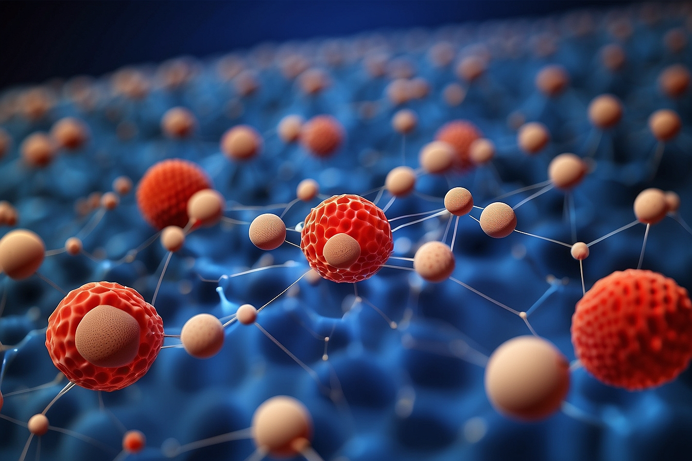
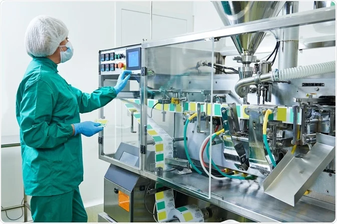

Table of contents |
|---|
| Abstract |
| Introduction |
| What are Drug Delivery Systems? |
| Properties of Nanoparticles |
| Applications of Nanoparticles |
| Future of Cancer Treatment |
| Conclusion |
| References |
This research article focuses on the use of nanoparticles in drug delivery systems used for cancer treatment and shows how they can be used instead of traditional methods. This article will also explore the different applications of nanoparticles in cancer therapy treatment and will outline key challenges it must overcome to reach its full potential for the future.
Modern science has been fundamental in the development of numerous cancer therapy methods that aim at either suppressing or curing cancer. The use of nanoparticles in drug delivery systems has proven to be more effective than traditional chemotherapy techniques. Drug Delivery Systems are methods of managing pharmaceutical chemicals to have beneficial effects on people. In targeted and controlled release strategies, nanoparticles are used in novel drug delivery systems that target cancer cells.
When it comes to drug delivery systems there are two main types - conventional drug delivery systems (CDDS) and novel drug delivery systems (NDDS), with the conventional system being the more commonly used technique. The way conventional systems occur are via oral, skin, and inhalation routes which typically have many advantages such as convenience, it is non-invasive, accurate doses, cheaper, higher compliance, and rapid absorption. Some disadvantages of using conventional systems include low permeability and irregular absorption issues. Novel delivery systems are more advanced techniques with more recent dosage forms which are much better than the CDDS and involve medicinal devices which provide greater safety to the patient and targets the drug to the required cell with more accuracy making it more efficient. The three types of novel drug delivery systems in which nanoparticles are used are – controlled systems, targeted systems, and modulated systems. Targeted DDS is when the drug is delivered in a way that it is only active in the target area of the body in which the drug is released over a while in a controlled manner. (Drug Delivery Systems 2022) Controlled DDS is when the release of a drug is for long periods, where the drug's rate of speed at which it is released is controlled by modification in the formulation. Modulated DDS is when the rate of drug release is controlled and modulated by devices, e.g., inhalers. (Drug Delivery Systems 2022) Nanoparticles are usually incorporated with these delivery systems to improve transportation to the cell by increasing the solubility and stability of drugs.
Nanoparticles are tiny particles that can be created to carry and deliver medicinal products to specific places in the body. They typically range in size from 1 to 100 nanometers. Their small size provides various benefits in drug delivery systems, particularly in cancer treatment. Some characteristics of nanoparticles that make them optimal for drug systems are the high surface-to-volume ratio, great electrical conductivity and small size. (Cheng et al., 2021). A high surface-to-volume ratio can improve the specificity of chemical drug complexes in targeted therapy which means it will increase the efficiency of the nanomaterial treatment reducing its toxicity to normal cells. (Benefits of nanotechnology for cancer 2023)
Nanoparticles in delivery systems can be used in various ways to treat cancer such as chemotherapy, targeted therapy, gene therapy and immunotherapy. Chemotherapy is one of the most practised treatment methods for cancer as it is where medicine is used to kill cancer cells. Nanoparticles are starting to get used more in chemotherapy due to their small size and enhanced permeability and retention (EPR) to carry chemotherapeutic agents to the intended tumour cells (Gavas et al., 2021). The use of nanoparticles has a bonus in that it reduces toxicity and improves drug efficacy. Targeted therapy and Gene therapy are both methods of cancer treatment that are being in which targeted therapy involves specific sites to interact with molecular targets in the cell, and Gene therapy involves the interaction between pharmacological molecules and the genetic material of the cell. (Orzetti et al., 2022). The use of nanoparticles in gene therapy plays an important role in the treatment of different cancers as they can be effective drug carriers by improving circulation time, improving bioavailability, and improving the success rate in delivering the gene accurately(Liyanage et al., 2019). Immunotherapy is a type of cancer treatment that uses substances made by the body to boost the immune system and help find and kill cancer cells (Patel, 2022). Nanoparticles can be used in immunotherapy treatment as delivery systems to safely transfer antigens for tumours over to lymph nodes by protecting them from degenerative enzymes in the body and effectively delivering them to the site. (Park et al., 2018)
Nanoparticles at the moment show great promise for the future of cancer treatment, however, there are still challenges and obstacles it must overcome to reach its full potential. Though nanoparticles reduce toxicity and degradation time, more scientific research has to be carried out in order to minimise side effects and increase the precision of the nanoparticles to the cancer cells. An issue that must be investigated is the manufacturing of complex nanoparticles, but simple nanoparticles like liposomes and polymeric nanoparticles can be manufactured using manufacturing operation units. (Shi et al., 2016) The production of complex nanoparticles poses a problem to the control and good manufacturing practice requirements as the operation units used for simple nanoparticles aren’t capable of producing complex nanoparticles and require modifications and changes. (Shi et al., 2016) Although there are many modifications that are required to fully utilise nanoparticles in cancer treatment, there is certainly promise for the future in reducing the number of human mortalities using nanoparticles in cancer treatment.
Figure above shows how a simple nanoparticle can be manufactured
In conclusion, this paper has summarized how nanoparticles can be utilized in cancer treatment. I have talked about how nanoparticles can be used in drug delivery systems to give us an alternative method to the conventional treatment method in cancer therapy. Nanoparticles' special properties like their high surface-to-volume ratio make them ideal for efficient and accurate drug deliveries whilst also minimising the toxicity to surrounding cells. In cancer treatment, nanoparticles play a significant role in various methods such as chemotherapy, targeted and gene therapy and immunotherapy which shows the potential the future holds for cancer therapy. Though there are many hurdles that scientists must overcome to gain the most from nanoparticles, in coming times with the right research and funding, human mortality from cancer has the potential to be reduced.
Nanoparticle-based drug delivery in the fight against cancer (2017). YouTube. 30 August.
Available at: https://www.youtube.com/watch?v=aFU5Qx-cLu8 (Accessed: 27 October 2023)
Drug Delivery System Conventional Drug Delivery System Novel Drug Delivery SysteM Made Easy (2021). 26 April.
Available at: https://www.youtube.com/watch?v=NnEv4GGmrc8 (Accessed: 27 October 2023)
Drug Delivery Systems (2022) National Institute of Biomedical Imaging and Bioengineering. Available at:
https://www.nibib.nih.gov/science-education/science-topics/drug-delivery-systems-getting-drugs-their-targets-controlled-manner (Accessed: 01 November 2023)
Cheng, Z. et al. (2021) Nanomaterials for cancer therapy: Current progress and Perspectives - Journal of Hematology & Oncology, BioMed Central.
Available at: https://jhoonline.biomedcentral.com/articles/10.1186/s13045-021-01096-0 (Accessed: 01 November 2023)
Benefits of nanotechnology for cancer (2023) National Cancer Institute.
Available at: https://www.cancer.gov/nano/cancer-nanotechnology/benefits (Accessed: 01 November 2023)
Patel, J. (2022) What is immunotherapy?, Cancer.Net. Available at:
https://www.cancer.net/navigating-cancer-care/how-cancer-treated/immunotherapy-and-vaccines/what-immunotherapy#:~:text=Immunotherapy%20is%20a%20type%20of,and%2For%20other%20cancer%20treatments
(Accessed: 8 November 2023)
Liyanage, P.Y. et al. (2019) Nanoparticles-based drug delivery and gene therapy for breast cancer: Recent advancements and future challenges, Seminars in Cancer Biology.
Available at: https://www.sciencedirect.com/science/article/abs/pii/S1044579X19301774#:~:text=Nanoparticles%20can%20be%20game%20changer,delivering%20the%20gene%20regulator%20accurately
(Accessed: 8 November 2023)
Park, W., Heo, Y.-J. and Han, D.K. (2018) New opportunities for nanoparticles in cancer immunotherapy - biomaterials research, BioMed Central.
Available at: https://biomaterialsres.biomedcentral.com/articles/10.1186/s40824-018-0133-y#Abs1 (Accessed: 8 November 2023)
Orzetti, S. et al. (2022) Genetic therapy and molecular targeted therapy in oncology:
Safety, pharmacovigilance, and perspectives for Research and Clinical Practice, International journal of molecular sciences.
Available at: https://www.ncbi.nlm.nih.gov/pmc/articles/PMC8951339/#:~:text=(a)%20Genetic%20therapy%20involves%20the,molecular%20targets%20in%20the%20cell (Accessed: 8 November 2023)
Gavas, S., Quazi, S. and Karpiński, T.M. (2021) Nanoparticles for cancer therapy: Current progress and challenges, Nanoscale research letters.
Available at: https://www.ncbi.nlm.nih.gov/pmc/articles/PMC8645667/ (Accessed: 8 November 2023)
Shi, J. et al. (2016) Cancer nanomedicine: Progress, challenges and opportunities, Nature News.
Available at: https://www.nature.com/articles/nrc.2016.108#Sec7 (Accessed: 10 November 2023)